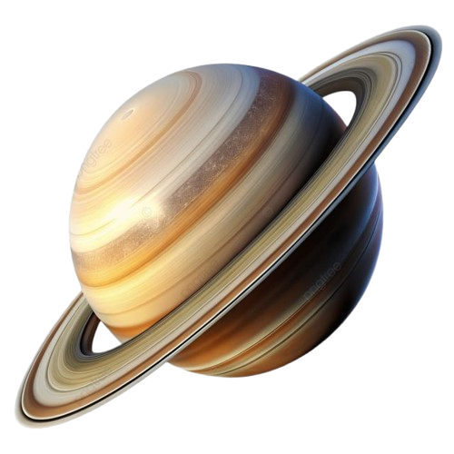

Saturno
Saturno es famoso por su impresionante sistema de anillos formados por hielo y roca. Es un gigante gaseoso similar a Júpiter.
Datos importantes
- Distancia al Sol: 1.4 mil millones de km
- Duración del año: 29 años terrestres
- Tiene más de 80 lunas
- Sus anillos son los más grandes del sistema solar